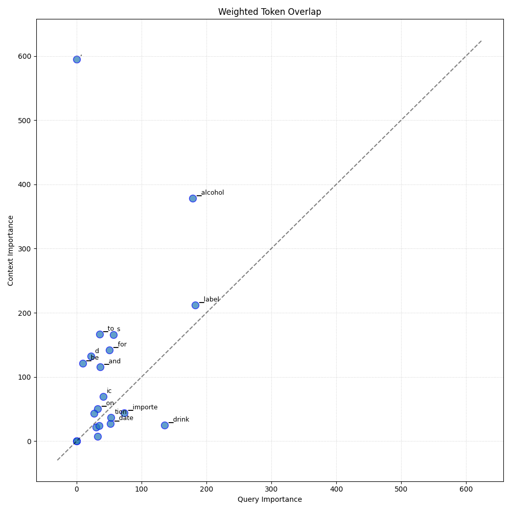

Analysis: query_89
Query: ▁query:▁What▁info▁need▁to▁be▁on▁labels▁for▁imported▁alcoholic▁drinks,▁like▁expiration▁date▁and▁warnings?
Document Relevance

Weighted Overlap

Token Comparison

Documents
Document 1 (Click to Expand)
▁Includes▁any▁political▁subdivision▁of▁any▁State,▁the▁District▁of▁Columbia,▁the▁Commonwealth▁of▁Puerto▁Rico,▁the▁Commonwealth▁of▁the▁Northern▁Mariana▁Islands,▁Guam,▁the▁Virgin▁Islands,▁American▁Samoa,▁Wake▁Island,▁the▁Midway▁Islands,▁Kingman▁Reef,▁or▁Johnston▁Island.▁State▁law.▁Includes▁State▁statutes,▁regulations▁and▁principles▁and▁rules▁having▁the▁force▁of▁law.▁TTB.▁The▁Alcohol▁and▁Tobacco▁Tax▁and▁Trade▁Bureau,▁Department▁of▁the▁Treasury,▁Washington,▁DC.▁United▁States.▁The▁several▁States,▁the▁District▁of▁Columbia,▁the▁Commonwealth▁of▁Puerto▁Rico,▁the▁Commonwealth▁of▁the▁Northern▁Mariana▁Islands,▁Guam,▁the▁Virgin▁Islands,▁American▁Samoa,▁Wake▁Island,▁the▁Midway▁Islands,▁Kingman▁Reef,▁and▁Johnston▁Island.▁Use▁of▁other▁terms.▁Any▁other▁term▁defined▁in▁the▁Alcoholic▁Beverage▁Labeling▁Act▁and▁used▁in▁this▁part▁shall▁have▁the▁same▁meaning▁as▁assigned▁to▁it▁by▁the▁Act.▁[T.D.▁ATF–294,▁55▁FR▁5421,▁Feb.▁14,▁1990,▁as▁amended▁by▁T.D.▁ATF–425,▁65▁FR▁11892,▁Mar.▁7,▁2000;▁T.D.▁TTB–44,▁71▁FR▁16925,▁Apr.▁4,▁2006]▁##▁Subpart▁C▁-▁Health▁Warning▁Statement▁Requirements▁for▁Alcoholic▁Beverages▁##▁§▁16.20▁General.▁(a)▁Domestic▁products.▁On▁and▁after▁November▁18,▁1989,▁no▁person▁shall▁bottle▁for▁sale▁or▁distribution▁in▁the▁United▁States▁any▁alcoholic▁beverage▁unless▁the▁container▁of▁such▁beverage▁bears▁the▁health▁warning▁statement▁required▁by▁§▁16.21.▁It▁is▁the▁responsibility▁of▁the▁bottler▁to▁provide,▁upon▁request,▁sufficient▁evidence▁to▁establish▁that▁the▁alcoholic▁beverage▁was▁bottled▁prior▁to▁November▁18,▁1989.▁(b)▁Imported▁products.▁On▁and▁after▁November▁18,▁1989,▁no▁person▁shall▁import▁for▁sale▁or▁distribution▁in▁the▁United▁States▁any▁alcoholic▁beverage▁unless▁the▁container▁of▁such▁beverage▁bears▁the▁health▁warning▁statement▁required▁by▁§▁16.21.▁This▁requirement▁does▁not▁apply▁to▁alcoholic▁beverages▁that▁were▁bottled▁in▁the▁foreign▁country▁prior▁to▁November▁18,▁1989.▁It▁is▁the▁responsibility▁of▁the▁importer▁to▁provide,▁upon▁request,▁sufficient▁evidence▁to▁establish▁that▁the▁alcoholic▁beverage▁was▁bottled▁prior▁to▁such▁date.▁##▁§▁16.21▁Mandatory▁label▁information.▁There▁shall▁be▁stated▁on▁the▁brand▁label▁or▁separate▁front▁label,▁or▁on▁a▁back▁or▁side▁label,▁separate▁and▁apart▁from▁all▁other▁information,▁the▁following▁statement:
Document 2 (Click to Expand)
▁For▁vodkas▁and▁special▁vodkas,▁the▁first▁is▁the▁type▁of▁rectified▁ethyl▁alcohol▁used▁and,▁additionally,▁the▁list▁of▁components▁that▁affect▁the▁aroma▁and▁taste▁of▁vodkas;▁g)▁for▁fruit▁wines,▁fruit▁wine▁drinks,▁fruit▁ciders▁and▁fruit▁vodkas,▁fruit▁brandy▁-▁the▁type▁of▁fruit▁from▁which▁they▁are▁made;▁h)▁for▁aged▁and▁collection▁wines▁-▁the▁harvest▁year,▁for▁collection▁sparkling▁wines▁and▁high▁quality▁sparkling▁wines▁-▁the▁month▁and▁year▁of▁the▁circulation;▁i)▁for▁high▁quality▁sparkling▁wines▁(sparkling▁grape▁champagne▁wines)▁-▁production▁method▁(classic▁or▁tank);▁j)▁for▁cognac,▁brandy,▁high▁quality▁brandy,▁Calvados,▁fruit▁brandy,▁whiskey,▁rum▁-▁the▁aging▁period▁of▁distillates;▁k)▁for▁beer▁and▁beer-based▁drinks▁(beer▁drinks)▁-▁type,▁processing▁method,▁information▁on▁unfiltering,▁extract▁(in▁percent)▁(for▁beer),▁actual▁extract▁(in▁percent)▁(for▁beer▁drinks);▁l)▁production▁date▁(bottling,▁manufacturing,▁registration)▁and▁expiration▁date.▁The▁labeling▁of▁alcoholic▁beverages,▁in▁respect▁of▁which▁the▁manufacturer▁establishes▁an▁unlimited▁shelf▁life,▁must▁be▁supplemented▁with▁the▁following▁inscription:▁"The▁shelf▁life▁is▁not▁limited▁if▁the▁storage▁conditions▁are▁observed.";▁m)▁storage▁conditions.▁It▁is▁allowed▁not▁to▁indicate▁storage▁conditions▁after▁opening▁if▁the▁quality▁*▁product▁safety▁does▁not▁change▁after▁opening▁the▁packaging▁that▁protects▁alcoholic▁beverages▁from▁damage;▁o)▁a▁contrasting▁warning▁inscription,▁which▁is▁applied▁in▁capital▁letters▁in▁an▁easy-to-read▁font▁of▁the▁largest▁possible▁size▁33